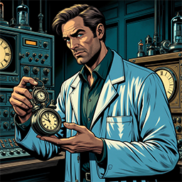
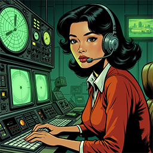
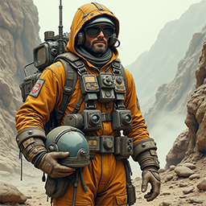
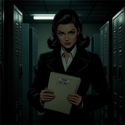

/Module2_Practice - Copy/images/banner.png)
Personnel - Project Astra
The success of Project Astra was never solely the result of advanced technology or classified machinery—it was the product of human will, intellect, and sacrifice. Behind every launch window, alien signal, or atmospheric breach stood individuals who gave their lives—quietly and completely—to a mission the world would never know existed. These were scientists, pilots, engineers, and analysts who operated without fanfare or recognition, united by one directive: reach further than any civilization before them.
Each operative was hand-selected not only for their technical expertise but for their psychological resilience, moral clarity, and creative ingenuity. Personnel often worked in isolation or in tightly controlled cells, piecing together fragments of incomprehensible data, strange anomalies, or new environmental threats. Many faced conditions far beyond what conventional training had prepared them for—gravity wells that distorted time, electromagnetic storms unlike anything on Earth, or alien materials that defied classification.
And yet, despite the risks and the secrecy, they endured. Bonds formed in silence and trust became the strongest tether. Whether deciphering a ghost signal from the moons of Jupiter or building subterranean habitats on distant, frozen planets, these men and women held fast to a purpose larger than themselves. They were the quiet architects of humanity’s shadow legacy among the stars—dedicated not for glory or gain, but for the sheer, solemn duty of discovery.
| Founding Members | |
|---|---|
| Elara Voss | |
|
Service Record: Commander Elara Voss led the exploratory fleet during the early years of Project Astra, overseeing initial contact protocols and high-risk missions beyond Mars. She played a pivotal role in the early phases of Operation Skyveil and later helped establish atmospheric landing protocols on Kepler-1073b. A former test pilot and aerospace physicist, her strategic brilliance and calm under pressure earned her the codename "Stellar Anchor." |
|
|
Rank: Commander |
|
| Dr. Halden Mirek | |
|
 |
Service Record: Dr. Mirek was the lead scientific mind behind Operation Chronoveil, developing early chronometric sensors used to detect and log temporal anomalies. His controversial theories on time folds were considered fringe—until his equations were verified during a Venus orbital pass. A recluse with ties to pre-war quantum think tanks, Mirek worked primarily in subterranean labs deep beneath the Nevada desert. |
|
Chief Temporal Analyst |
|
| Lt. Commander Naomi Chen | |
|
 |
Service Record: Lt. Commander Chen was a reconnaissance officer during Operation Echoframe, focusing on long-range signal tracing and deep-space communication encryption. Her algorithms laid the groundwork for real-time transmission across solar bodies, particularly aiding in decoding unknown signals detected near Titan. She was known for her adaptability and precision under radio blackout conditions. |
|
Lt. Commander |
|
| Specialist Darius Flint | |
|
 |
Service Record: Flint was embedded with the excavation and bio-environment teams during Operation Deeplock. A former miner turned engineer, he specialized in adapting drilling and tunneling equipment for extreme planetary conditions. Flint was instrumental in establishing the sub-crustal outpost on Mirellon-9, the first off-Earth habitat built within a planet’s mantle shell. |
|
Technical Specialist – Deep Operations |
|
| Agent Isadora Wren | |
|
 |
Service Record: Operating under deep cover, Wren coordinated inter-agency data routing and suppressed leaks related to Project Astra. She monitored both domestic and international scientific communities for signs of overlap with Astra’s classified findings. Though not officially tied to any single mission, her fingerprints appear on the logistics chain of nearly every blacksite launch and recovery effort. |
|
Intelligence Liaison Officer |
|
To all those who served in silence, we offer our deepest gratitude. The legacy of Project Astra was built not by machines or mandates, but by the tireless work of individuals who gave their time, talent, and often their very lives in pursuit of something greater. While the world turned unaware, you carried the weight of impossible missions with unwavering resolve. Your contributions—whether etched in classified reports or lost in deep space—will echo across time as some of the most daring and selfless acts of exploration humanity has ever undertaken.
We thank you not only for your bravery, but for your brilliance, your perseverance, and your unshakable belief in the mission. You charted paths through the unknown, asked questions no one else dared to ask, and built bridges to futures still unfolding. Though your names may never appear in textbooks, your legacy is written in every new horizon we now dare to reach. Project Astra stands as a monument to your courage, your sacrifice, and your quiet triumphs. From every corner of this hidden history, we say: thank you.